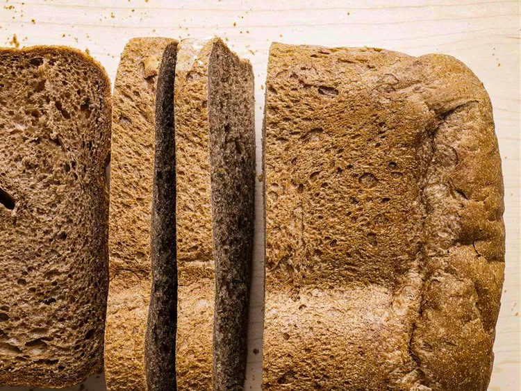

Black Rye Bread Recipe

Description
Black Rye Bread is popular bread made in Russian culture.
It has a very earthy taste to it.
Ingredients
- 2 Cups Water
- 2 tsps Cider Vinegar
- 2 Cups Flour
- 1 Cup Rye Flour
- 2 teaspoons dark cornsyrup
- 1 tbsp brown sugar
- 2 tsp dry yeast
Steps
- Preheat oven to 350F degrees
- Combine ingredients in mixing bowl
- Place in tray and bake for an hour and a half